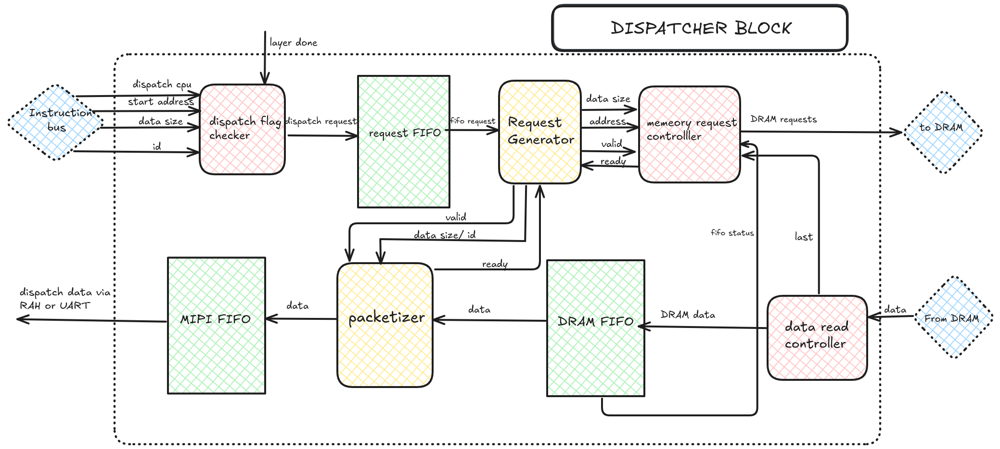

Dispatch Block¶
The FPGA to CPU Dispatcher Block facilitates data transfer between the FPGA to CPU results stored in FPGA’s DDR memory. After processing all layers of the model, this block ensures the seamless dispatch of 256-bit wide data from DDR to the CPU in 32-bit chunks. It includes mechanisms for request generation, data conversion, and signaling to indicate operation completion.
{kind=link}

When a dispatch_cpu signal is received from the instruction bus, the dispatcher waits for the layer_done signal from the config block, which indicates that all layers have been processed and results are ready for dispatch. Upon receiving the layer_done signal, the dispatcher generates a request to DDR, specifying the start address, burst length, and a read signal. DDR then begins sending 256-bit wide data from the specified address. The dispatche converts this data into 32-bit chunks and stores them in a FIFO for retrieval by the CPU. Once the config_done signal is received from the config block, indicating the final request,this sends a Start of Frame (SOF), data size, and ID to mark the end of the operation.
Dispatch_Flag_Checker is the block that receives the start address and data size to be sent to the CPU. It waits for the dispatch_cpu and layer_done signals, latches the data, concatenates it, and sends it to the FIFO for storage. The Request_Generator then generates requests to DDR. It waits for readiness signals from the packetizer and memory_request_controller blocks before taking data from the FIFO and forwarding it along with a valid request signal.
Memory_Request_Controller handles communication with DDR. Upon receiving a valid request, it latches the address and data size, sends the 32-bit address to DDR in 8-bit chunks. It waits for the data_last signal from the data_rd_ctrl before sending the next request.The packetizer slices incoming 256-bit data from DDR into 32-bit chunks. It latches the data size and ID upon receiving a valid request and sends processed data to the FIFO.
Packetizer monitors the config_done signal and sends a SOF to indicate the end of the operation alongside data size and ID based on valid signal and dispatch data through RAH or UART.